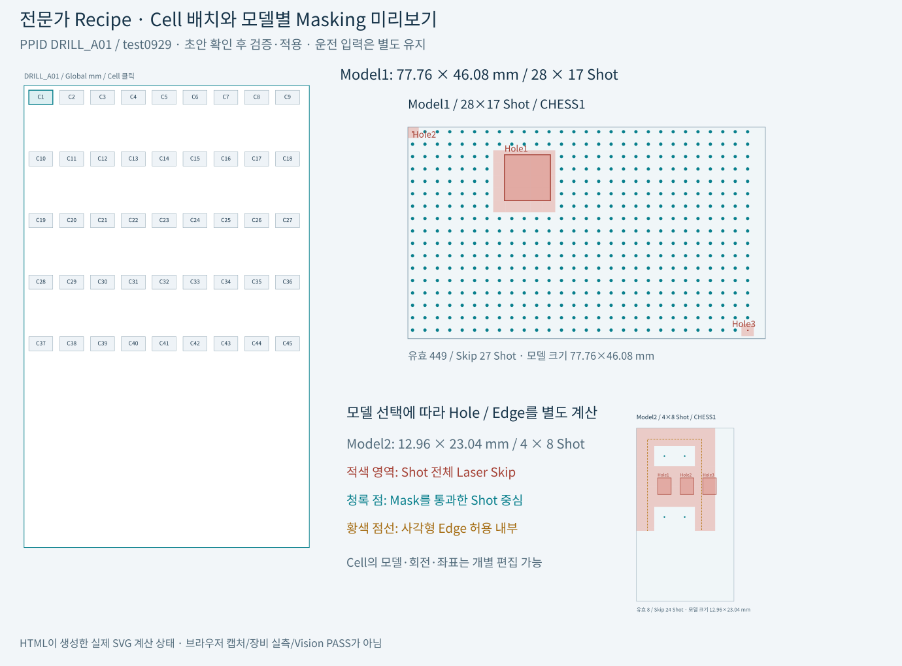

전문가 Recipe · Cell 배치 · PPID Masking
시뮬레이터 열기 · 속도·Camera·시간 계산 설명서
기본 화면에서는 Y속도·X속도·노출과 품질 기준만 설정합니다. Cell 배치와 모델별 Masking은 「전문가 · Recipe/Mask」 탭 또는 왼쪽 전문가 설정의 편집 버튼에서 다룹니다. 화면은 밝은 테마이며, 기판과 Shot 확대도도 같은 색을 사용합니다.
1. 초안을 편집하고, 검증한 뒤 적용합니다
- 「test0929 PPID 예제」를 누르거나 SECTION,NAME,VALUE 형식 CSV를 가져옵니다.
- 전체 Cell 배치에서 Cell을 선택하고 모델·회전·Offset을 확인합니다. 모델 선택으로 Hole/Edge/CHESS의 실제 Skip 미리보기를 확인합니다.
- 「모델 정의」 또는 「Cell 개별 좌표」를 펼쳐 수정합니다. 격자 생성은 초안 목록을 교체하며 활성 Recipe는 유지합니다.
- 「Recipe 검증·적용」을 누릅니다. 오류가 있으면 기존 조건을 유지합니다. 성공하면 기존 H01~H08 지정점을 보존하고 Head 소유권·Mask·Camera 도착시각을 다시 검사합니다.
- 검사점이 더 이상 유효하지 않으면 「8점 좌표 설정」 또는 「8 Head 자동 배치」에서 수정합니다. 속도 변경으로 Mask/Hole 오류를 해결할 수는 없습니다.
「초안 PPID CSV 저장」은 아직 적용하지 않은 초안도 저장합니다. 상단 「조건 저장 JSON」은 실제 활성 Recipe·축·Camera·8개 지정점을 함께 저장합니다. 「활성 Recipe로 되돌리기」는 편집 초안을 활성 설정으로 복원합니다.
2. 어떤 입력이 좌표를 바꾸나요?
| 원본 PPID 항목 | 의미와 적용 |
|---|---|
| COMMON / ONLINE_PPID_NAME | 예: DRILL_A01. Recipe 식별 이름입니다. |
| GLASS_SIZE_X/Y · AK_MARGIN_X/Y | 기판 외곽과 Cell 기준점에 더할 AK Margin (mm) |
| CELLn_ALIGN_TO_1ST_PIXEL_X/Y | AK 기준에서 Cell 첫 Pixel까지의 Offset (mm). 화면 Global 좌표에는 AK Margin도 더합니다. |
| CELLn_MODEL_TYPE · CELLn_ROTATION | 해당 Cell의 모델 번호(1~5)와 첫 Pixel을 중심으로 한 회전각(°) |
| MODELn_NUM_OF_PIXEL_X/Y | 모델별 Pixel 개수. Cell 크기와 Shot 열/행 한도가 달라집니다. |
| PIXEL_SIZE · PITCH · SPLITED_BEAM_COUNT | Design Pixel 간격, Shot Pixel Pitch, DOE 축당 분기 수(1 또는4) |
| CHESS | 1~5. Shot 열과 행 차이로 일부 Shot를 제외합니다. 1은 전부 유지합니다. |
| MODELn_MASKING_HOLE_NUMBER · HOLE1~3 | 활성 Hole 개수(0~3)와 Cell 로컬 X/Y/폭/높이(mm). 활성 개수 이후 값은 보존하며 판정에서 제외합니다. |
| MODELn_CELL_*_ROUND_X/Y | 원본 코드의 사각형 Edge 제외량. 원형 Corner Radius로 해석하지 않습니다. |
3. Cell에서 실제 가공점까지, 쉬운 계산
기본 Pixel은 0.09 mm, PITCH는 30입니다. 한 Shot 간격 P는 0.09×30=2.7 mm입니다. DOE4×4의 분기 간격은 2.7÷4=0.675 mm입니다. 첫 Shot 중심까지의 오프셋 H는 (4−1)÷2×0.675=1.0125 mm입니다.
로컬 Shot 중심 v=(행−1)×P+H
회전 후 X=u cosθ−v sinθ
회전 후 Y=u sinθ+v cosθ
Global Shot 중심=(AK Margin+Cell Offset)+회전 후 좌표
Global Branch 가공점=Global Shot 중심+회전한 Branch 오프셋
회전0°이면 단순 덧셈입니다. 회전90°이면 (u,v)가 (−v,u)가 됩니다. Shot 중심뿐 아니라 Branch 오프셋도 같은 각도로 돌립니다. 예를 들어 C1 Offset=(60,0), AK=(15.5,15.5), 회전90°, 열3/행2/B07의 Shot 중심은 (71.7875,21.9125) mm이고 실제 B07 가공점은 (72.125,22.25) mm입니다.
모델1은 864×512 Pixel이므로 크기는 77.76×46.08 mm, Shot은 floor(864/30)×floor(512/30)=28×17입니다. 모델2~5는 144×256 Pixel이므로 12.96×23.04 mm, 4×8 Shot입니다. 이 기본 모델값은 편집할 수 있습니다.
4. Masking은 회전 전 Cell 로컬에서 계산합니다
Mask 기준점은 실제 Shot 중심과 다릅니다. 원본은 xm=(열−1)P, ym=(행−1)P를 사용합니다. 전체 DOE Mask 분기 사각형을 합치면 xm±P/2, ym±P/2의 사각형입니다. Hole과 이 사각형이 겹치거나 닿으면 해당 Shot 전체를 Laser Skip합니다. 특정 Branch만 Hole을 피해도 전체 Shot가 Skip되면 검사점으로 선택할 수 없습니다.
Y겹침: Mask위쪽 ≤ Hole아래쪽 AND Mask아래쪽 ≥ Hole위쪽
X와 Y가 모두 겹치면 → Shot 전체 Skip
그림의 실제 Shot 중심과 Hole의 위치 관계를 맞추기 위해 Mask 좌표를 표시할 때 H를 더합니다. 입력한 Hole X/Y 자체를 변경하는 것은 아닙니다. 빨간 면은 Skip Shot, 청록 점은 유효 Shot 중심입니다.
Edge와 CHESS
Edge의 8개 X/Y 값이 모두 0.001 mm 이하이면 비활성입니다. 활성일 때 각 코너의 제외량은 max(|X|,|Y|)입니다. 왼쪽 경계는 좌상·좌하 제외량의 큰 값, 오른쪽 경계는 마지막 Shot 로컬 X에서 우상·우하 제외량의 큰 값을 뺀 위치입니다. 위·아래도 같은 방식입니다. 이 경계에 닿아도 Skip합니다. 기준은 Cell 실물 외곽이 아니라 마지막 Shot 좌표이므로 첫·마지막 Shot 행/열이 제외될 수 있습니다.
CHESS 유지 조건: (Shot 열−Shot 행)을 CHESS로 나눈 나머지가 0
CHESS2: 열2/행2 유지, 열2/행3 제외

5. Recipe를 적용하면 운전 판정도 달라집니다
회전·Cell Offset 변경은 Global X/Y를 바꾸므로 Camera X 이동거리와 Y 도착시각이 달라집니다. 모델 변경은 Shot 한도를 바꾸고, Mask 변경은 유효 가공점과 자동 배치 후보를 바꿉니다. 모든 가공점이 Mask로 제외되면 계획을 불가로 표시하고 완료를 만들지 않습니다. Head 순차/최적 분할과 2/4/8 상한은 변경한 좌표로 다시 계산합니다.
Recipe를 적용할 때 기존 검사점은 자동으로 다른 점으로 바꾸지 않습니다. 예를 들어 선택 Cell을 모델2로 바꿨는데 기존 Shot 열이 10이면 새 한도4를 넘어 INVALID입니다. 유효 열/행을 다시 고르거나 자동 배치를 명시적으로 실행하세요.
사이클의 취득 표시와 재생 규칙은 유지합니다. Glass가 바뀌어도 완료점은 남으며, 새 사이클 또는 새 Recipe/계획 적용 시 누적을 초기화합니다. 초안만 편집할 때는 활성 계획과 누적을 그대로 둡니다.
6. PPT의 Cell당 Scanner 1개 예시
고객 설명용 PPT 2장은 8열×5행=40 Cell, X Pitch110 mm인 별도 예시입니다. 해당 모델의 모든 Shot 소유권을 계산하여 Cell마다 담당 Head가 하나임을 확인했습니다. 원본 test0929는 9열×5행=45 Cell, X Pitch100 mm이며 서로 구분합니다.
예시의 8개 대표점은 최대4점/기판이며, 2점 운전은4 Glass, 4점 운전은2 Glass로 전체 Head를 커버합니다. H01·H05 등 같은 Y의 점이 있어 예시8점을1 Glass에서 전부 찍을 수는 없습니다. 예시 조건 JSON을 상단 조건 불러오기로 열면 PPT와 같은 결과를 재현합니다.
Y 도착 간격=200÷100=2 s
X 이동=0.2 s 가속+70÷200 s 등속+0.2 s 감속=0.75 s
필요 준비=0.75+0.05 정착+0.02 Guard+0.00007 촬영 관련=0.82007 s
여유=2−0.82007=1.17993 s
필요 Y 간격=100×0.82007=82.007 mm (이 두 점과 조건에서)
7. 보존 범위와 적용 범위
기판·Mask·축·Camera를 사용하는 실제 운전은 사양과 실측 검증이 필요합니다. PPT의 Blur1 µm는 임시 허용값으로 약5.8 object pixel에 해당합니다. 엄격한1 pixel 기준에서는 현재 조건이 성립하지 않으며, 같은 속도에서 노출 상한1.725 µs는 Camera 최소10 µs보다 짧습니다.
소스 기준: A3_LD_Process_SW_IPS commit 6b19d7aaf0de81271468ab7dac0fa15493172f38. CCellPatternCalculator, CRecipeShotMaskingPlan, CReviewManager의 명목 좌표·Mask 규칙을 반영합니다.